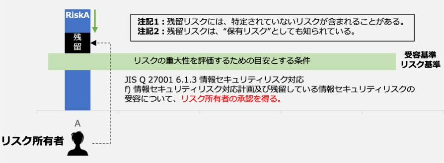

11-3-1. 対策案の検討
リスク対応プロセス
リスク対応とは、「リスクを修正するプロセス」[25]のことです。リスクアセスメントプロセスの結果に基づいており、リスク基準に基づき対応すべき優先順位づけされたリスクに対応する内容となります。
1．適切な情報セキュリティリスク対応の選択肢の選定
リスク対応の選択肢は以下の通りです。
リスク回避
リスクが発生する可能性のある環境を排除するなど、リスクそのものをなくそうとすることです。たとえば、個人情報を受け取らないようにしたり、その業務自体をやめたりするといった方法です。
リスク低減
セキュリティ対策（管理策）を採用することによって、リスクの発生確率を低くしたり、リスクが顕在化したときの影響の大きさを小さくすることです。「軽減」「修正」と呼ばれることもあります。
リスク移転
リスクを他者に移して、自分たちの責任範囲外にしたり、リスクが顕在化したときの損失を他者に引き受けさせることです。たとえばクラウドのサーバを利用することによって、サーバが破壊されたり盗難されたりするリスクを移転することができます。「共有」と呼ばれることもあります。
リスク受容（保有）
対策を行わずにリスクを受け入れるということです。被害は大きいが発生可能性がほとんどない場合や、発生しても被害がほぼない場合が該当します。
2．情報セキュリティリスク対応の選択肢の実施に必要な全ての管理策の決定
ISO/IEC 27001:2022の附属書A、ISO/IEC 27017などの管理策集から、リスクの回避、低減、移転、受容（保有）の中から選択したリスク対応に必要な全ての管理策を決定します。
3．決定した管理策とISO/IEC 27001:2022附属書A の管理策との比較
必要な全ての管理策を、ISO/IEC 27001:2022附属書Aに挙げられている管理策と比較します。
4．適用宣言書の作成
必要な全ての管理策と、その理由及び実施状況を文書化します。適用宣言書に含まれる全ての管理策の実施状況は、“実施された”、“一部実施された”または“実施されていない”として記述できます。
5．情報セキュリティリスク対応計画
組織がリスクに対応する必要性を含んだリスク対応計画を作成します。リスク対応計画とは、組織のリスク受容基準を満たすようにリスクを修正するための計画のことです。
- 組織の必要な管理策を実施するためのプロジェクト計画
- リスクを修正するために管理策が環境と相互にどのように作用するかを記述した設計計画
6．リスク所有者による承認
リスク所有者は、リスク対応計画を承認します。
7．残留している情報セキュリティリスクの受容
リスク所有者は、残留リスクが受容可能かどうかを判断し、決定します。
（出典）ISO/IEC「ISO/IEC 27005:2022」を基に作成
[25]: JISC 日本産業標準調査会.”JIS Q 27000:2019 情報技術－セキュリティ技術－情報セキュリティマネジメントシステム－用語”. https://www.jisc.go.jp/app/jis/general/GnrJISNumberNameSearchList?show&jisStdNo=Q27000, （2023-09-21）.
リスク対応プロセス（例）
例：自社のホームページ（電子データ）
リスクの内容
不正アクセスで価格が改ざんされたり、ウイルスが仕掛けられると顧客や閲覧者に被害が発生し、信用を失う
リスク対応
リスク評価の結果をもとにリスク対応を決定する（今回は例として「リスクを低減する」方法を選択）
対策例：不正アクセスが発生する可能性を低減させるために、アクセス権限を最小化したり、パスワードを複雑にしたり、多要素認証を実施したりするなど、認証の強化を行い、不正アクセスが発生する可能性を低減する
対応する管理策：5.15アクセス制御
対策基準の策定（対策基準の例）
技術的対策
- 公開サーバへの不正アクセス対策
- 公開サーバへのアクセス権の最小化と管理の強化
- 多要素認証の設定の有効化
残留リスク
残留リスクとは、「リスク対応後に残っているリスク」[26]のことです。残留リスクを受容するためには、リスク所有者の承認が必要になります。受容可能だと判断された残留リスクであっても、資産の価値や脅威、脆弱性など環境の変化に合わせて、リスクレベル（リスクの大きさ）を見直し、必要に応じて追加のリスク対応を行う必要があります。

図52. 残留リスクの概要
（出典）MSQA「ISMS推進マニュアル活用ガイドブック 2022年 1.0版」を基に作成
[26]: JISC 日本産業標準調査会.”JIS Q 27000:2019 情報技術－セキュリティ技術－情報セキュリティマネジメントシステム－用語”. https://www.jisc.go.jp/app/jis/general/GnrJISNumberNameSearchList?show&jisStdNo=Q27000, （2023-09-21）.